Model Compatibility — 20 Model Families + 4 Detectors, All Verified¶
Every result on this page was generated with real pretrained models by
generate_proof_images.py. Each heatmap is
also scored automatically against a foreground/background split of the
test photo — a combination is only marked ✅ if its heatmap actually lands on
the subject. Numbers below are CPU timings from the latest verification run;
the raw scores live in verification_results.json.
All proof images live in
docs/assets/proof/. Nothing is mocked or simulated — every heatmap was produced on the same Labrador Retriever photo (original_dog.jpg).
{kind=link}
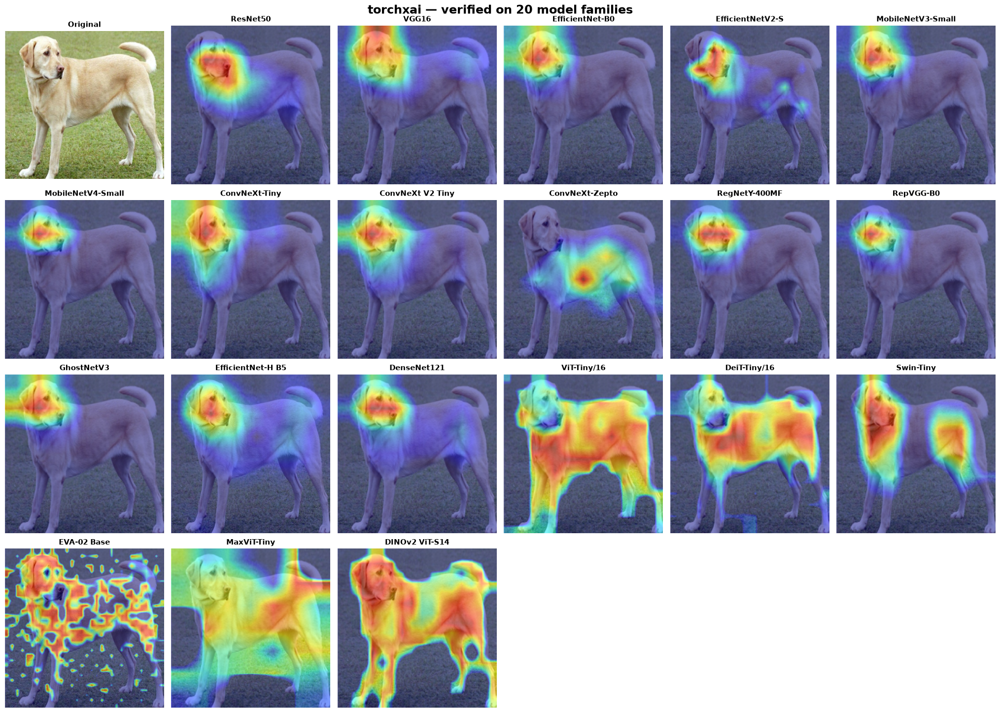
Legend: ✅ verified (heatmap focuses on the subject) · ⚠️ known limitation (see notes) · — not applicable
Section 1: CNN Classifiers¶
1. ResNet50 (torchvision)¶
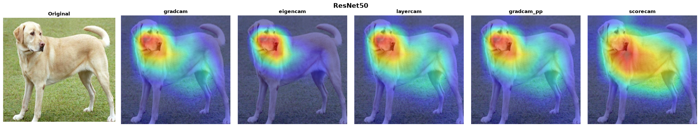
| Method | Status | Time |
|---|---|---|
| GradCAM | ✅ | 81ms |
| EigenCAM | ✅ | 171ms |
| LayerCAM | ✅ | 61ms |
| GradCAM++ | ✅ | 58ms |
| ScoreCAM | ✅ | 2,274ms |
from torchxai import explain
import torchvision.models as models
model = models.resnet50(pretrained=True)
heatmap = explain(model, "dog.jpg") # Just works
2. VGG16 (torchvision)¶
torchxai hooks the ReLU after the last convolution (post-activation, 14×14) so every method — including activation-based ScoreCAM — sees non-negative feature maps at full resolution.
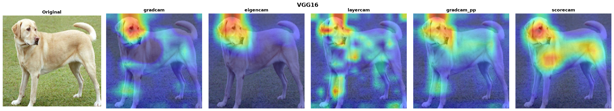
| Method | Status | Time |
|---|---|---|
| GradCAM | ✅ | 420ms |
| EigenCAM | ✅ | 278ms |
| LayerCAM | ✅ | 176ms |
| GradCAM++ | ✅ | 157ms |
| ScoreCAM | ✅ | 2,113ms |
model = models.vgg16(pretrained=True)
heatmap = explain(model, "dog.jpg")
3. EfficientNet-B0 (torchvision) & EfficientNetV2-S (timm)¶
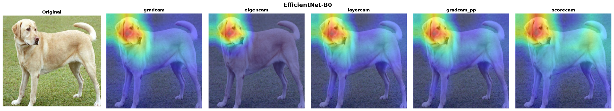
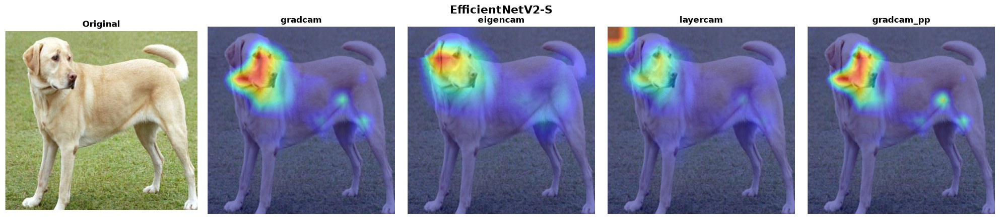
| Method | B0 | V2-S |
|---|---|---|
| GradCAM | ✅ 616ms | ✅ 2,525ms |
| EigenCAM | ✅ 873ms | ✅ 456ms |
| LayerCAM | ✅ 614ms | ✅ 3,773ms |
| GradCAM++ | ✅ 613ms | ✅ 4,094ms |
| ScoreCAM | ✅ 7,139ms | — |
model = models.efficientnet_b0(pretrained=True)
heatmap = explain(model, "dog.jpg")
# timm variant
import timm
model = timm.create_model("efficientnetv2_rw_s.ra2_in1k", pretrained=True)
heatmap = explain(model, "dog.jpg")
4. MobileNetV3-Small (torchvision) & MobileNetV4-Small (timm)¶
For timm's MobileNet family, conv_head runs after global pooling —
hooking it yields a useless 1×1 map. torchxai automatically targets the
last spatial block instead.
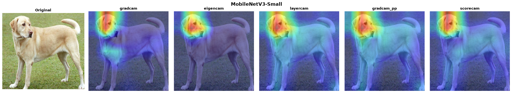
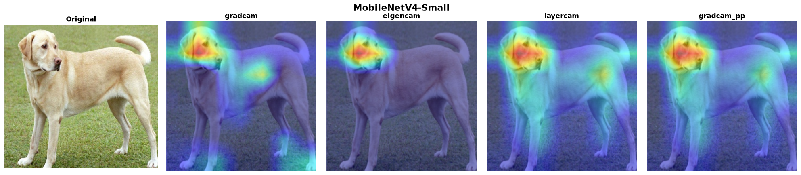
| Method | V3-Small | V4-Small |
|---|---|---|
| GradCAM | ✅ 421ms | ✅ 563ms |
| EigenCAM | ✅ 315ms | ✅ 101ms |
| LayerCAM | ✅ 177ms | ✅ 298ms |
| GradCAM++ | ✅ 178ms | ✅ 296ms |
| ScoreCAM | ✅ 2,408ms | — |
model = models.mobilenet_v3_small(pretrained=True)
heatmap = explain(model, "dog.jpg")
model = timm.create_model("mobilenetv4_conv_small.e2400_r224_in1k", pretrained=True)
heatmap = explain(model, "dog.jpg")
5. ConvNeXt family — Tiny (torchvision), V2 Tiny (timm), Zepto (timm)¶
ConvNeXt places LayerNorm between the feature maps and the classifier, so gradient-weighted CAMs have an ambiguous sign. torchxai resolves the polarity with an insertion/deletion confidence test, so the heatmaps stay on the subject.
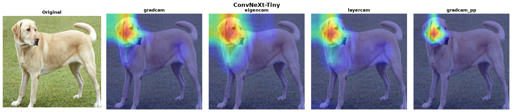
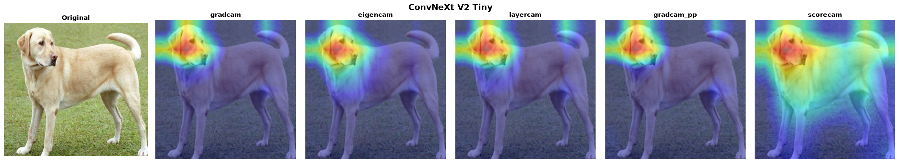
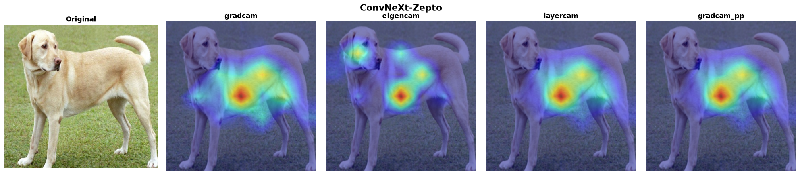
| Method | Tiny | V2 Tiny | Zepto |
|---|---|---|---|
| GradCAM | ✅ 2,153ms | ✅ 2,132ms | ✅ 308ms |
| EigenCAM | ✅ 1,437ms | ✅ 1,367ms | ✅ 236ms |
| LayerCAM | ✅ 2,127ms | ✅ 2,207ms | ✅ 288ms |
| GradCAM++ | ✅ 2,121ms | ✅ 2,110ms | ✅ 293ms |
| ScoreCAM | — | ✅ 10,676ms | — |
model = models.convnext_tiny(pretrained=True)
heatmap = explain(model, "dog.jpg")
model = timm.create_model("convnextv2_tiny.fcmae_ft_in22k_in1k", pretrained=True)
heatmap = explain(model, "dog.jpg")
6. RegNetY-400MF (torchvision) & RepVGG-B0 (timm)¶
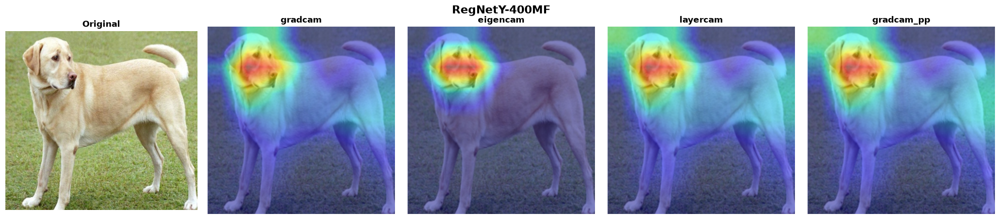
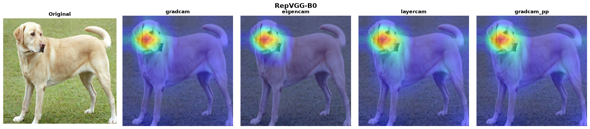
| Method | RegNetY | RepVGG |
|---|---|---|
| GradCAM | ✅ 175ms | ✅ 65ms |
| EigenCAM | ✅ 133ms | ✅ 44ms |
| LayerCAM | ✅ 93ms | ✅ 71ms |
| GradCAM++ | ✅ 96ms | ✅ 70ms |
7. GhostNetV3 & EfficientNet-H B5 (timm)¶
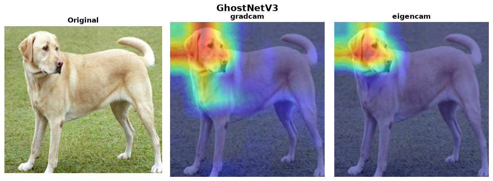
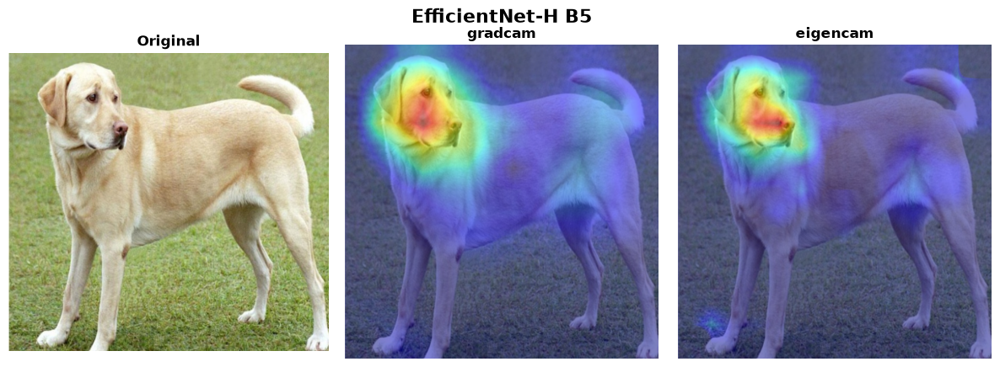
| Method | GhostNetV3 | EfficientNet-H B5 |
|---|---|---|
| GradCAM | ✅ 4,091ms | ✅ 7,043ms |
| EigenCAM | ✅ 2,627ms | ✅ 6,450ms |
EfficientNet-H B5 runs at its native 448×448 input — torchxai reads the expected input size from the model, no manual configuration needed.
8. DenseNet121 (torchvision)¶
Gradient-based methods hit a known PyTorch backward-hook conflict with DenseNet's in-place operations. Use the gradient-free methods.
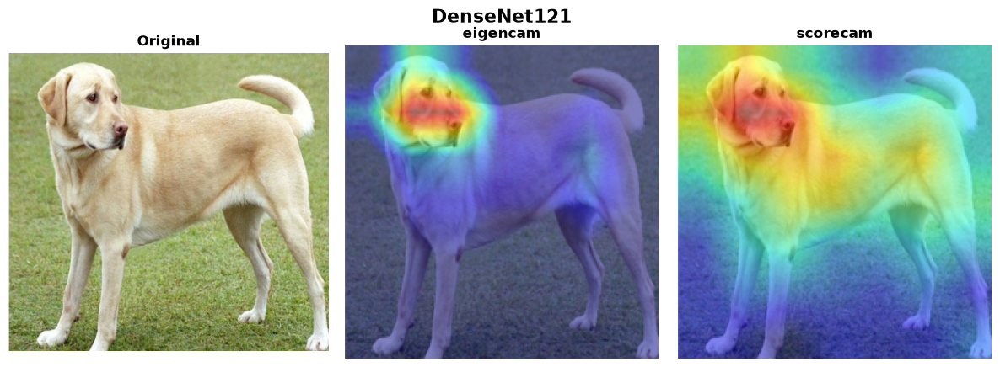
| Method | Status | Time | Notes |
|---|---|---|---|
| GradCAM | ⚠️ | — | PyTorch backward hook + view tensor conflict |
| EigenCAM | ✅ | 235ms | Recommended for DenseNet |
| LayerCAM | ⚠️ | — | Same as GradCAM |
| GradCAM++ | ⚠️ | — | Same as GradCAM |
| ScoreCAM | ✅ | 2,047ms | Gradient-free; works correctly |
model = models.densenet121(pretrained=True)
heatmap = explain(model, "dog.jpg", method="eigencam")
Section 2: Vision Transformers¶
torchxai captures real attention matrices from timm models (it temporarily disables fused scaled-dot-product attention during the hooked forward pass), so Attention Rollout and Transformer Attribution run genuinely — they no longer silently fall back to activation-based methods.
1. ViT-Tiny/16 (timm)¶
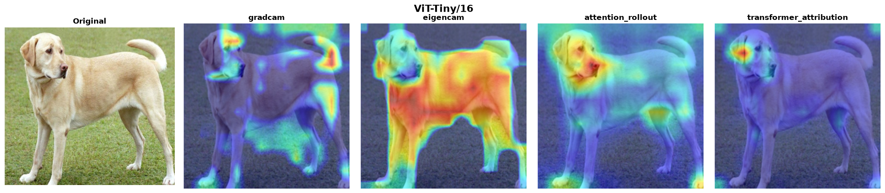
| Method | Status | Time | Notes |
|---|---|---|---|
| GradCAM | ⚠️ | 71ms | Noisy on very small ViTs — prefer the methods below |
| EigenCAM | ✅ | 43ms | Segments the full subject |
| Attention Rollout | ✅ | 42ms | Auto-selected default for ViTs |
| Transformer Attribution | ✅ | 34ms | Class-specific |
model = timm.create_model("vit_tiny_patch16_224", pretrained=True)
heatmap = explain(model, "dog.jpg") # auto-selects attention rollout
2. DeiT-Tiny/16 (timm)¶
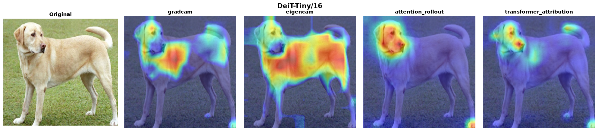
| Method | Status | Time |
|---|---|---|
| GradCAM | ✅ | 62ms |
| EigenCAM | ✅ | 49ms |
| Attention Rollout | ✅ | 43ms |
| Transformer Attribution | ✅ | 35ms |
3. Swin-Tiny (timm)¶
Shifted-window attention — hierarchical patches, not global. Window attention cannot be rolled out globally, so gradient/activation CAMs are the supported methods (rollout falls back to EigenCAM with a warning).
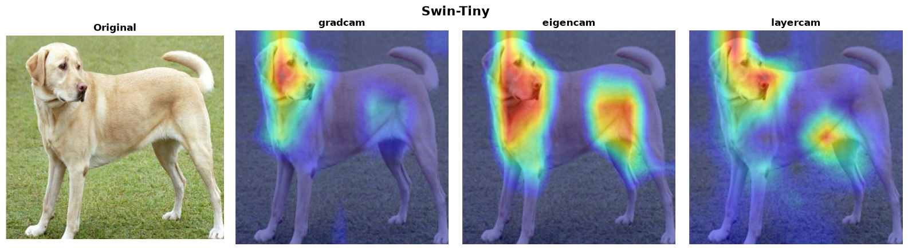
| Method | Status | Time |
|---|---|---|
| GradCAM | ✅ | 198ms |
| EigenCAM | ✅ | 159ms |
| LayerCAM | ✅ | 183ms |
4. EVA-02 Base @ 448 (timm)¶
torchxai reads the 448×448 input size from the model automatically and derives the token grid from the actual sequence length, so the 32×32 patch grid needs no manual configuration.
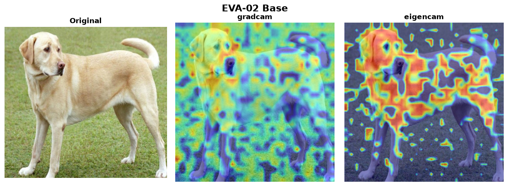
| Method | Status | Time |
|---|---|---|
| GradCAM | ✅ | 1,271ms |
| EigenCAM | ✅ | 973ms |
model = timm.create_model("eva02_base_patch14_448.mim_in22k_ft_in22k_in1k", pretrained=True)
heatmap = explain(model, "dog.jpg") # input size auto-resolved to 448
5. MaxViT-Tiny (timm)¶
Multi-axis attention hybrid. torchxai hooks the full final block (matching the pytorch-grad-cam reference), not an internal sub-module.
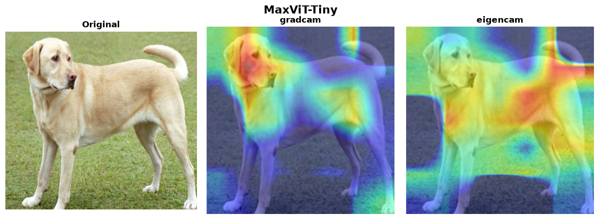
| Method | Status | Time |
|---|---|---|
| GradCAM | ✅ | 1,472ms |
| EigenCAM | ✅ | 965ms |
| LayerCAM | ⚠️ | — |
6. DINOv2 ViT-S/14¶
DINOv2 ships without a classification head. Wrap it with a linear layer
for explain() compatibility. EigenCAM is the auto-selected method —
it segments the subject from the patch features and needs no trained head.
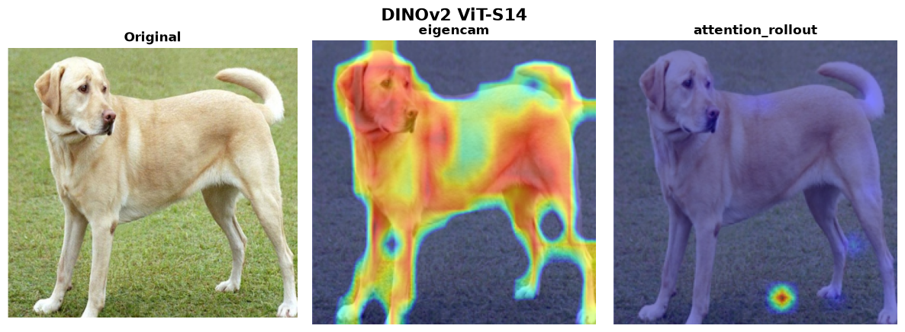
| Method | Status | Time | Notes |
|---|---|---|---|
| EigenCAM | ✅ | 132ms | Auto-selected; works with an untrained head |
| Attention Rollout | ⚠️ | 88ms | Register-less DINOv2 has attention-sink artifacts that hollow out rollout maps |
| GradCAM | ⚠️ | — | Only meaningful with a trained classification head |
from torchxai import explain
import torch
import torch.nn as nn
backbone = torch.hub.load("facebookresearch/dinov2", "dinov2_vits14")
class DINOv2Classifier(nn.Module):
def __init__(self, backbone, num_classes=1000):
super().__init__()
self.backbone = backbone
self.head = nn.Linear(backbone.embed_dim, num_classes)
def forward(self, x):
features = self.backbone(x)
return self.head(features)
model = DINOv2Classifier(backbone)
heatmap = explain(model, "dog.jpg") # auto-selects EigenCAM
Section 3: Object Detection¶
Detection models are explained with EigenCAM on the backbone/neck features (gradients through detection heads are unreliable). torchxai auto-detects Ultralytics models and targets the last feature layer before the Detect head.
1–3. YOLO26n / YOLO11n / YOLOv8n (Ultralytics)¶
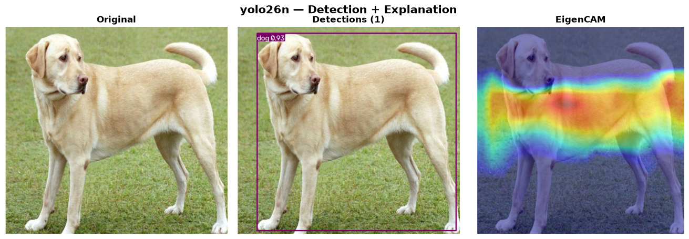
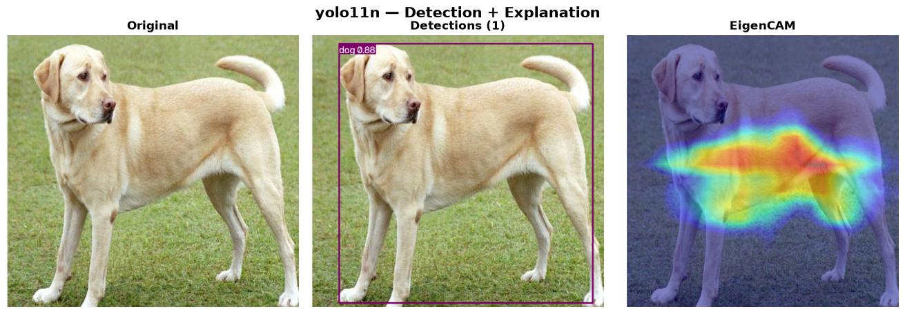
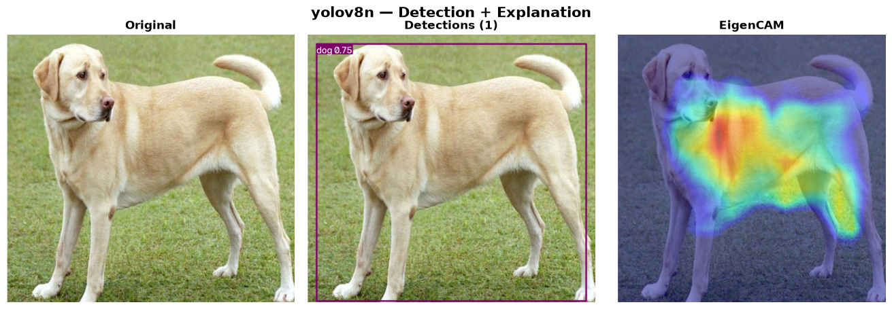
| Model | Detections | EigenCAM |
|---|---|---|
| YOLO26n | ✅ | ✅ |
| YOLO11n | ✅ | ✅ |
| YOLOv8n | ✅ | ✅ |
from ultralytics import YOLO
from torchxai import explain
yolo = YOLO("yolo26n.pt")
results = yolo("dog.jpg") # detections
# EigenCAM heatmap of the backbone features (auto-targeted)
heatmap = explain(yolo.model, "dog.jpg", method="eigencam", image_size=(640, 640))
For per-detection explanations (heatmap cropped/masked per bounding box):
from torchxai.detection import explain_detection
explanations = explain_detection(yolo.model, "dog.jpg")
for exp in explanations:
print(exp.class_id, exp.confidence, exp.heatmap.shape)
4. RF-DETR Base (Roboflow, ICLR 2026)¶
Detection and a real backbone heatmap, verified end-to-end.
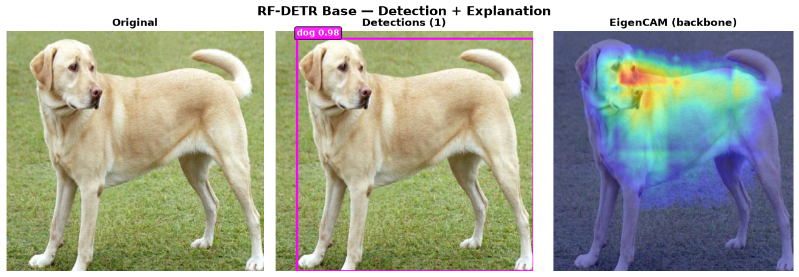
from rfdetr import RFDETRBase
from torchxai import explain
rf = RFDETRBase()
detections = rf.predict("dog.jpg", threshold=0.5)
core = rf.model.model # LWDETR nn.Module
heatmap = explain(core, "dog.jpg", method="eigencam",
target_layer=core.backbone,
image_size=(rf.model.resolution, rf.model.resolution))
Section 4: Input-Level Methods¶
SmoothGrad, Integrated Gradients, and RISE operate directly on pixel gradients rather than intermediate layer activations. They are architecture-agnostic — every model in this document is compatible.
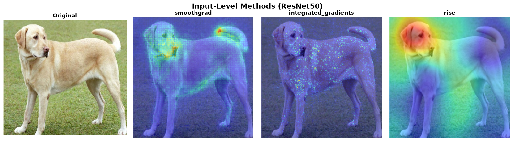
| Method | Status | Time | Notes |
|---|---|---|---|
| SmoothGrad | ✅ | ~4s | Averages gradients over 50 noisy copies |
| Integrated Gradients | ✅ | ~4s | 50-step path integral |
| RISE | ✅ | ~3.5min | 4,000 random mask samples — most thorough |
heatmap = explain(model, "dog.jpg", method="smoothgrad")
heatmap = explain(model, "dog.jpg", method="integrated_gradients")
heatmap = explain(model, "dog.jpg", method="rise")
Section 5: Full Compatibility Matrix¶
| Model | GradCAM | EigenCAM | LayerCAM | GradCAM++ | ScoreCAM | Attn Rollout | Transf. Attr | SmoothGrad | Int. Grads | RISE |
|---|---|---|---|---|---|---|---|---|---|---|
| ResNet50 | ✅ | ✅ | ✅ | ✅ | ✅ | — | — | ✅ | ✅ | ✅ |
| VGG16 | ✅ | ✅ | ✅ | ✅ | ✅ | — | — | ✅ | ✅ | ✅ |
| EfficientNet-B0 | ✅ | ✅ | ✅ | ✅ | ✅ | — | — | ✅ | ✅ | ✅ |
| EfficientNetV2-S | ✅ | ✅ | ✅ | ✅ | — | — | — | ✅ | ✅ | ✅ |
| MobileNetV3-Small | ✅ | ✅ | ✅ | ✅ | ✅ | — | — | ✅ | ✅ | ✅ |
| MobileNetV4-Small | ✅ | ✅ | ✅ | ✅ | — | — | — | ✅ | ✅ | ✅ |
| ConvNeXt-Tiny | ✅ | ✅ | ✅ | ✅ | — | — | — | ✅ | ✅ | ✅ |
| ConvNeXt V2 Tiny | ✅ | ✅ | ✅ | ✅ | ✅ | — | — | ✅ | ✅ | ✅ |
| ConvNeXt-Zepto | ✅ | ✅ | ✅ | ✅ | — | — | — | ✅ | ✅ | ✅ |
| RegNetY-400MF | ✅ | ✅ | ✅ | ✅ | — | — | — | ✅ | ✅ | ✅ |
| RepVGG-B0 | ✅ | ✅ | ✅ | ✅ | — | — | — | ✅ | ✅ | ✅ |
| GhostNetV3 | ✅ | ✅ | — | — | — | — | — | ✅ | ✅ | ✅ |
| EfficientNet-H B5 | ✅ | ✅ | — | — | — | — | — | ✅ | ✅ | ✅ |
| DenseNet121 | ⚠️ | ✅ | ⚠️ | ⚠️ | ✅ | — | — | ✅ | ✅ | ✅ |
| ViT-Tiny/16 | ⚠️ | ✅ | — | — | — | ✅ | ✅ | ✅ | ✅ | ✅ |
| DeiT-Tiny/16 | ✅ | ✅ | — | — | — | ✅ | ✅ | ✅ | ✅ | ✅ |
| Swin-Tiny | ✅ | ✅ | ✅ | — | — | — | — | ✅ | ✅ | ✅ |
| EVA-02 Base | ✅ | ✅ | — | — | — | — | — | ✅ | ✅ | ✅ |
| MaxViT-Tiny | ✅ | ✅ | ⚠️ | — | — | — | — | ✅ | ✅ | ✅ |
| DINOv2 ViT-S/14 | ⚠️ | ✅ | — | — | — | ⚠️ | — | ✅ | ✅ | ✅ |
| YOLO26n / YOLO11n / YOLOv8n | — | ✅ | — | — | — | — | — | — | — | — |
| RF-DETR Base | — | ✅ | — | — | — | — | — | — | — | — |
Legend: ✅ verified against the automated foreground check · ⚠️ known limitation (see model notes) · — not applicable / not verified for this architecture
Section 6: How to Reproduce¶
Every proof image on this page is generated by
generate_proof_images.py in the project
root, using real pretrained weights and the same Labrador Retriever input
image. The script also writes
verification_results.json with a
pass/fail verdict for every model × method combination and fails loudly
if any heatmap goes flat, inverts onto the background, or crashes.
Install dependencies:
pip install torchxai-explain
pip install timm # timm model families
pip install ultralytics # YOLO26n, YOLO11n, YOLOv8n (optional)
pip install rfdetr # RF-DETR Base (optional)
Run the full proof suite:
python generate_proof_images.py # everything (~30 min on CPU)
python generate_proof_images.py --skip-slow # skip ScoreCAM + RISE
python generate_proof_images.py --only resnet50,vit_tiny_16
python generate_proof_images.py --strict # non-zero exit if any check fails
Output images are saved to docs/assets/proof/. The master grid is
regenerated automatically at docs/assets/proof/master_grid_final.png.